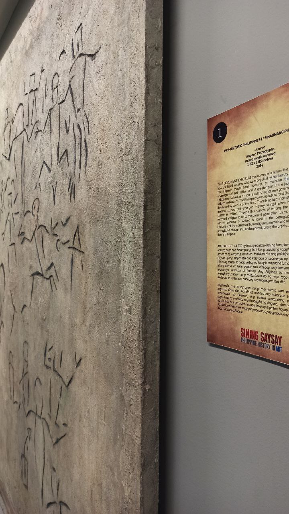
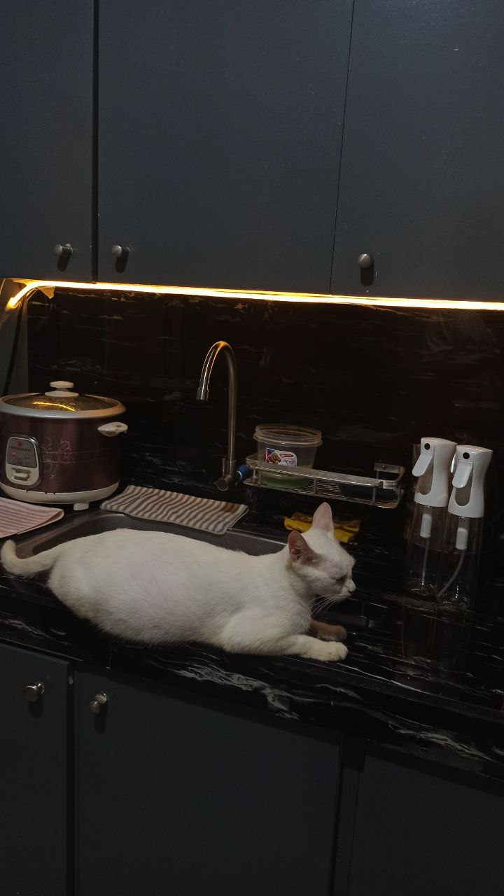
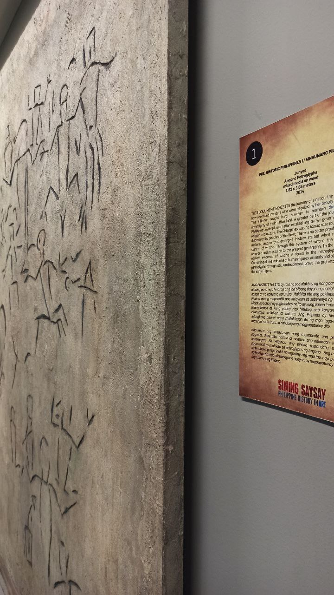
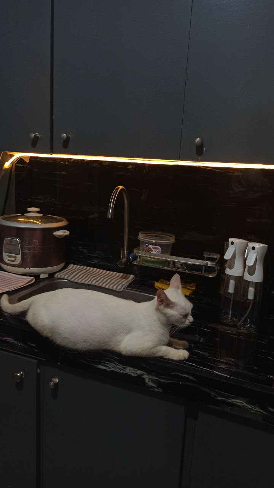

Dumating ka sa buhay ko nang hindi ko inaasahan.
Wala kang dalang malalalim na salita o pangakong pang-matagalang kasama,
pero dumating ka — at sapat na 'yon para gumaan ang bigat na matagal ko nang pasan.
Tahimik ka lang, pero sa presensya mo, unti-unti kong naalalang kaya ko pala.
Hindi mo man alam, pero naging pahinga kita.
Sa mga panahong hindi ko na alam kung paano muling tumayo,
ikaw ‘yung liwanag na hindi nakakasilaw.
Isa kang paalala na kahit wasak, puwedeng muling magmahal.
Sa mga simpleng kilos mo, parang may pabulong na mensahe:
“Lumabas ka na riyan… ligtas ka na, pwede ka nang mabuhay ulit.”
At totoo ‘yon.
Hindi dahil inayos mo ako, kundi dahil pinili mong manatili, kahit saglit lang.
Tinulungan mo akong huminga sa gitna ng pagod,
hindi sa malakas na paraan, kundi sa presensya mong kalmado at buo.
Hindi ko alam kung kailan nagsimulang magbago ang lahat,
pero ngayon, habang tinatanggap kong hindi lahat ng dumarating ay mananatili,
gusto kong sabihin:
Salamat.
Pinatawad ko na ang mga hindi nasabi,
at iniingatan ko ang mga sandaling naging totoo tayo — kahit saglit.
Ngayon, pinipili kong magpaalam.
Hindi dahil hindi na kita mahal, kundi dahil natutunan ko nang maging buo,
kahit wala ka sa tabi ko.
Kung sakaling maalala mo ako sa pagitan ng katahimikan ng gabi,
sana maalala mong may isang panahong naging tahanan mo ako —
at sa panahong ‘yon, masaya akong naging iyo.
Mahal kita.
—Mula sa buwan.
Mula sa puwang na kahit malayo’t malamig,
Patuloy na nagmamasid,
Tahimik na umiibig,
Kahit walang katiyakan kung maririnig.
Kung sakali lang — kung tatahimik ang mundo at biglang naalala mo ako —
pakinggan mo ang Tinig sa Dilim ng mula sa Mula sa Buwan.
Nandoon ako.
Tahimik, totoo, at buo.
Salamat, Ga.
Ako. Galing sa puso ko.
Pinatibay ng buwan, inakay ng katahimikan pabalik sa sarili.
Mananatiling nakatitig sa dilim,
Intan

 


